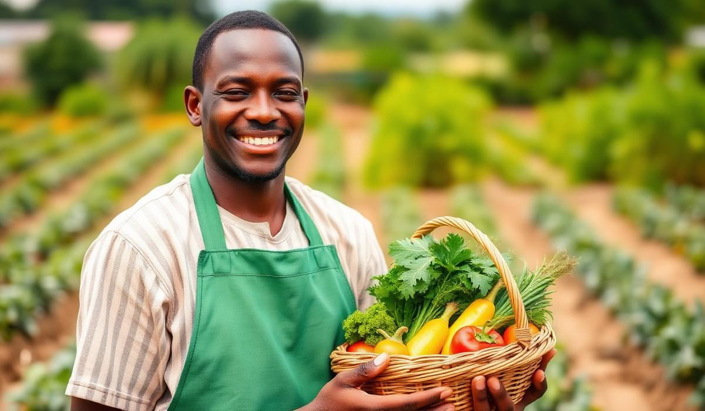

Oyuki was born out of a simple frustration — finding fresh, honest food shouldn't be so hard. We built a marketplace that unites farmers, home cooks, and hungry customers.
Our purpose is to connect farms to homes, businesses, and global markets through a trusted digital marketplace. We make it easy for customers to access fresh farm produce while empowering farmers, vendors, and agricultural businesses to reach more buyers locally and internationally.By combining technology with agriculture, we create opportunities for farmers to grow, businesses to thrive, and consumers to enjoy quality products with confidence.Where Our Farm Meets Need, Not Just Profit.
connecting farmers, vendors, exporters, and consumers through a reliable platform that promotes food security, sustainable agriculture, and global trade. We envision a future where every farmer has access to profitable markets, every customer has access to fresh, quality produce, and African agricultural products are recognized and trusted around the world.
